«Лазурь»: новые грани бизнеса

Полиграфический рынок России в последние годы претерпевает структурные изменения. Многие типографии диверсифицируют свой бизнес, двигаясь в сторону ниш, которые, по мнению многих, должны развиваться. Особенно сложно пришлось в последние годы предприятиям, которые были нацелены на достаточно узкие сегменты рынка, — именно они оказались наиболее уязвимы перед изменением рыночной ситуации. Одним из таких стала многотиражная печать простой и недорогой полиграфической продукции. В первых числах марта мы побывали в городе Реж, Свердловской области, в известной типографии «Лазурь». Ее учредитель Татьяная Деева и генеральный директор Андрей Голендухин рассказали нам, какие немалые усилия им пришлось приложить для трансформации своего бизнеса.
Непредвиденные сложности
В «Лазури» редакция была более 10 лет назад. Это крупная типография, оснащенная серьезными рулонным печатными машинами с газовой сушкой и соответствующим послепечатным оборудованием, в частности, линиями для подборки и шитья блоков бесшвейным способом и вкладочно-швейно-резальными агрегатами. Ее специализацией была многотиражная печать: «В прежние годы мы активно печатали многотиражную продукцию, в первую очередь каталоги торговых сетей и легкие журналы, — говорят руководители. — Объемы были большие, одних каталогов торговой сети «Красное и Белое» печатали более 6 млн экз. каждые две недели. А были еще каталоги «Пяторочки» и некоторых других торговых сетей. Помимо этого, были и многотиражные журналы, вроде Star Hits. Соответственно, вся производственная структура нашей типографии была настроена на производство этой продукции. Но в налаженный рабочий механизм вкрались непредвиденные сложности: по нашему бизнесу сильно ударила пандемия коронавируса. Все наши основные заказчики каталогов резко уменьшили и тиражи, и частоту выхода. Вынужденная закрытость страны в первое время пандемии показала, что каталоги оказались невостребованными, так как люди мало ходили по магазинам, где они распространялись. И в итоге даже после ослабления коронавирусных ограничений заказчики каталогов к прежним тиражам не вернули. Какой-то объем печати этой продукции у нас есть, но уже совсем не такой, что был раньше. Каталоги с рынка практически ушли. Причем важно отметить, что заказчики ушли не от нас, а с рынка — этой продукции стало в десятки раз меньше. А начало СВО добавило к этому еще и уход с рынка существенной доли журналов. В общем, загрузка наших мощных ролевых машин стала очень небольшой. В результате одну большую ролевую машину мы остановили и уже несколько лет не запускали».
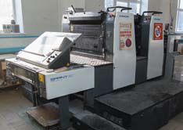
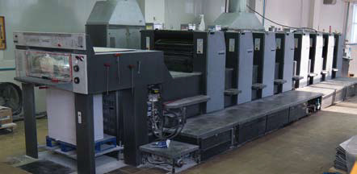
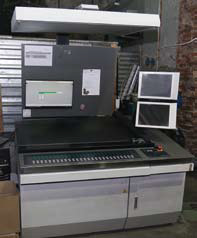

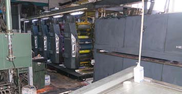
В типографии «Лазурь» внушительные мощности по листовой офсетной печати
Спасло типографию то, что еще до начала пандемии в ней начинали задумываться о диверсификации. В частности, в типографии появился цех флексографской печати, оснащенный современной узкорулонной печатной машиной компании Bobst: «Машина эта у нас появилась в 2016 г. и вполне вписалась в общую структуру производства. Конечно, по объемам ее работы невозможно сравнивать с нашими рулонными офсетными машинами, но какой-то объем мы на ней могли производить. В итоге стало понятно, что нужно переходить со специализированного производства на производство универсальное, способное производить самую разную полигра- фическую продукцию».
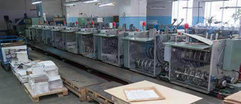
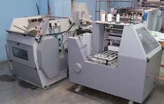
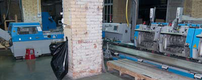
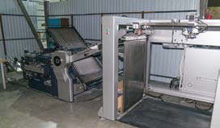
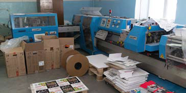
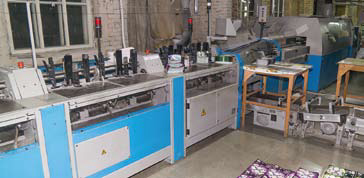
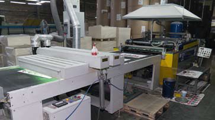
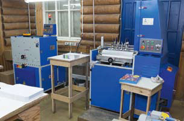
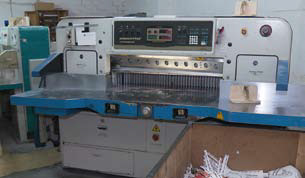
Хорошо оснащенные цеха послепечатной обработки позволяют выпускать в больших объемах продукцию на скобе, на клею, а также небольшими тиражами книжную продукцию
Диверсификация
«Нельзя сказать, что о диверсификации производства мы задумались только с возникновением серьезных проблем с основной загрузкой, — отмечают руководители типографии. — Определенные наработки у нас были в разных сегментах: у нас было простое оборудование для производства упаковки, выпускали книги, печатали рекламную продукцию. Но все же основная наша специализация каталоги — давали основной объем доходов. Но когда стало понятно, что с каталогами перспектив немного, мы решили ак- тивно развивать картонную упаковку. Впрочем, и другие направления нашего бизнеса мы активизировали.
Первое, что нужно было сделать для развития производства упаковки, — приобрести серьезную листовую печатную машину. Мы смогли приобрести пятикрасочную машину с лакировальной секцией Komori Lithron GL 537 формата А1. Машина была хоть и бывшая в употреблении, но с минимальным пробегом. Ее появление позволило существенно развить наши возможности в области листовой печати».
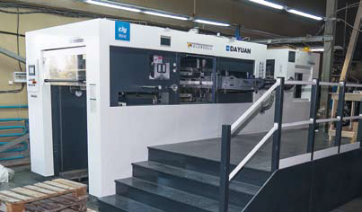
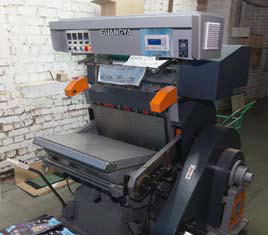
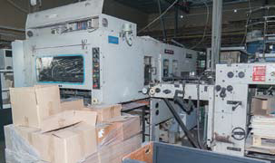
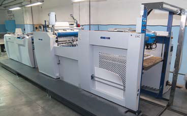
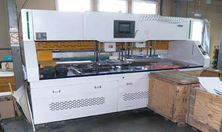
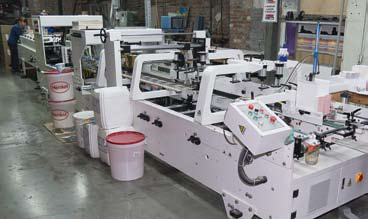
Относительно недавно в типографии обновили формный цех, где появилось выводное устройство китайского производства. Также была приобретена машина для флатовки ролевой бумаги на листы
Внимание к книгам
В итоге руководство типографии «Лазурь» приняло решение развивать разные направления деятельности, чтобы меньше зависеть от конъюктуры рынка и больше не оказываться в ситуации, когда бизнес начинает страдать от ухода с рынка тех или иных видов продукции: «Помимо картонной упаковки и самоклеящейся этикетки, которые у нас были и раньше, мы начали существенно больше внимания уделять внимания книгам. В прошлом году приобрели комплекс оборудования для пооперационного изготовления книг в твердом переплете. Он позволяет успешно изготавливать небольшие тиражи. А именно небольшие тиражи книг сейчас наиболее востребованы — за прошлый год мы изготовили 96 наименований, что довольно много. Мы и раньше делали книги, но с появлением нового печатного и послепечатного оборудования наши возможности в этом сегменте существенно расширились».
Еще один сегмент, которым решила заняться ти- пография «Лазурь», — сувенирная продукция: «Мы уже несколько лет выпускаем различную сувенирную продукцию. Но это не привычные бизнес-сувениры. Это продукция для розничной продажи с тематикой региона. Мы выпускаем календари с видами города Екатеринбурга, нарисованными художниками причем в разных стилях. Выпускаем путеводители по городам области, недавно освоили производство наборов шоколада с тематическими региональными рисунками на упаковках. Все это оказалась востребованным. Свердловская область — конечно, не самый главный туристический регион России, но туристический бизнес у нас есть».
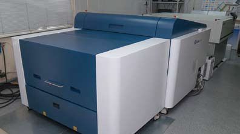
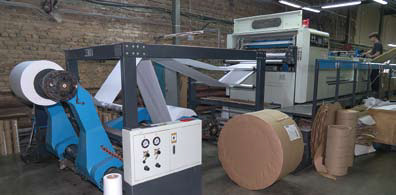
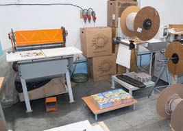
В типографии постепенно формируется комплекс оборудования для серьезного производства картонной упаковки. Из недавнего приобретения — пресс для высечки Dayuan MHK 1050 ACER
Но все же самое главное направление, в котором планирует развиваться типография «Лазурь», — картонная упаковка: «У нас уже несколько лет работает фальцевально-склеивающая линия и прессы для высечки. Но они старые — с очень небольшим уровнем автоматизации. А вопросы автоматизации для нашего региона становятся очень актуальными. В Екатеринбурге и окрестностях много военных заводов, которые с началом СВО заработали на полную мощность и начали активно набирать персонал, в том числе с не очень высокой квалификацией, но на высокие зарплаты. Полиграфическая экономика не позволяет платить такие зарплаты, и мы начали терять персонал. Поэтому, чтобы меньше зависеть от персонала, мы стали приобретать автоматизированное оборудование, которому требуется меньше операторов. В частности, недавно купили машину для удаления облоя и разделения заготовок. Раньше это делали вручную, и для этого требовалось несколько человек, а сейчас работает один оператор. Также в прошлом году мы приобрели новый пресс для высечки. Старые уже не обеспечивали ни нужной производительности, ни требуемого качества. А от точности и качества высечки зависит, как пройдет операция фальцовки-склейки и насколько аккуратно и опрятно будет выглядеть готовая упаковка. В начале прошлого года наш специалист по приглашению компании «Т-Системы» побывал на заводе Dayuan в Китае. И тогда стало понятно, что эта компания производит современные высококлассные пресса для высечки и тиснения, в результате на выставке «Росупак» мы подписали договор о приобретении такого пресса, и уже осенью компания «Т-Системы» установила его у нас в типографии.
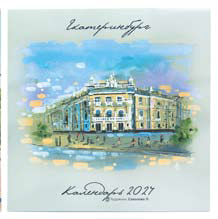
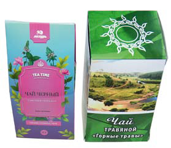
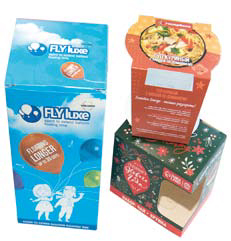
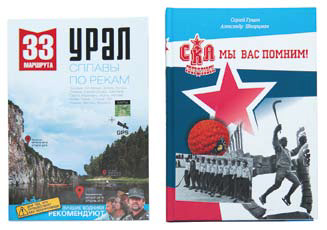
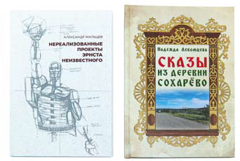
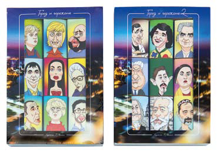
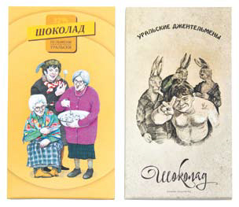
Сувенирная продукция: календари с рисованными видами города Реж, упаковка для шоколада с узнаваемыми персонажами («Уральские пельмени»), открыточные виды города и т.д
Пресс Dayuan MHK 1050ACER, который мы приобрели, имеет очень серьезную конфигурацию. Он, помимо высечки, выполняет еще и функцию удаления облоя. Также специально заказали пресс с увеличенным давлением. Наш пресс имеет усилие давления 600 тонн, против 300 тонн в штатной версии. Мы планировали на нем за один прогон делать высечку и конгревное тиснение, которое достаточно часто используем. При большой длине вырубных линеек и большом количестве штампов для конгрева на одной плите давления в 300 тонн может не хватить. А мы довольно часто делаем очень мелкую упаковку. Наша фальцесклейка обладает возможность делать очень маленькие коробки (например, для губной помады), а их на печатном листе расположено много. Не каждая типография может делать такие коробки, поэтому к нам с такими заказами обращаются часто. Также в дополнение к базовой конфигурации мы заказали нагрев плиты. Это дает возможность осуществлять высечку изделий из пластика (на будущее), и радикально улучшает качество конгревного тиснения. Мы пробовали с одного и того же штампа делать тиснение без нагрева и с нагревом: «небо и земля». Так что нагрев плиты очень важная функция. Что касается самого процесс поставки и монтажа, то тут все прошло штатно. Время от заказа на заводе до установки оказалось небольшим, что очень порадовало. Монтаж и запуск благодаря специалистам компании «Т-Системы» прошли успешно и оперативно. Отмечу, что изначально мы хотели купить универсальный пресс, который может делать и высечку, и тиснение фольгой (у Dayuan такие есть). Но в компании «Т-Системы» нас от этого отговорили, хотя универсальный пресс дороже. Как всякое универсальное устройство, оно чуть хуже делает каждую операцию, чем специализированные устройства. Так что пресс для тиснения фольгой будем покупать отдельно, а в данный момент используем тигельный пресс». Диверсификацию своего бизнеса типография «Лазурь» осуществляет успешно: «Когда с рынка резко ушли каталоги торговых сетей, наш объем продаж практически рухнул. Был очень тяжелый период времени. Но, активизировав работу в разных полиграфических направлениях, мы начали постепенно исправлять ситуацию. По итогам 2024 года мы зафиксировали рост нашего объема продаж почти на 25%, и в позапрошлом году тоже был рост. Мы продолжаем вкладывать средства в совершенствование производственной базы, и каждый год приобретаем новое оборудование. И останавливаться пока не планируем. В планах постепенно создать универсальное высокоэффективное современное полиграфическое производство»